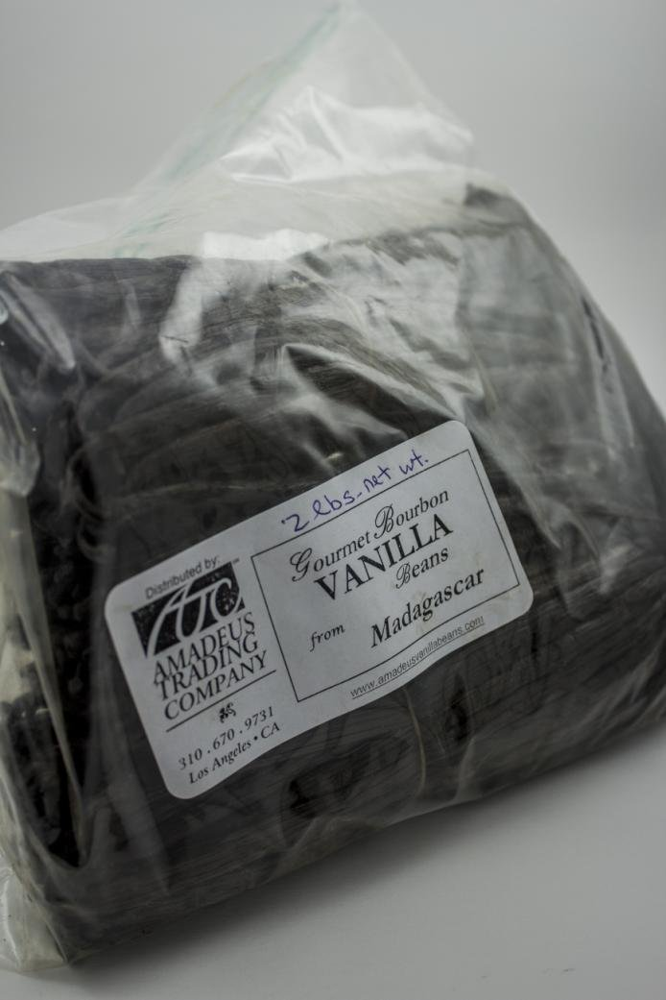
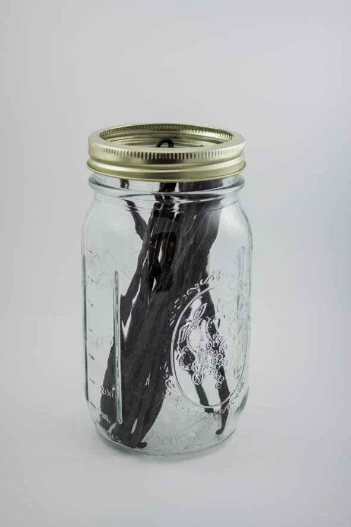
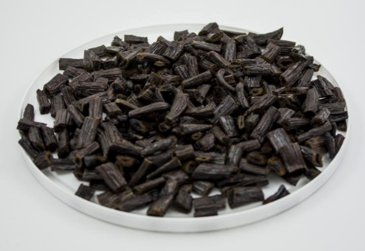
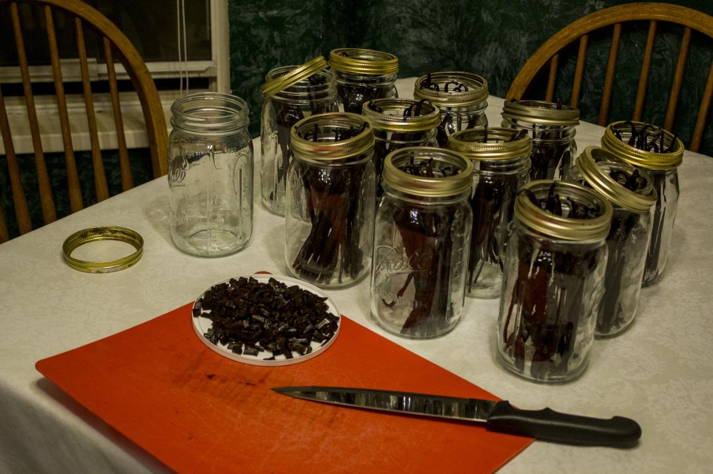
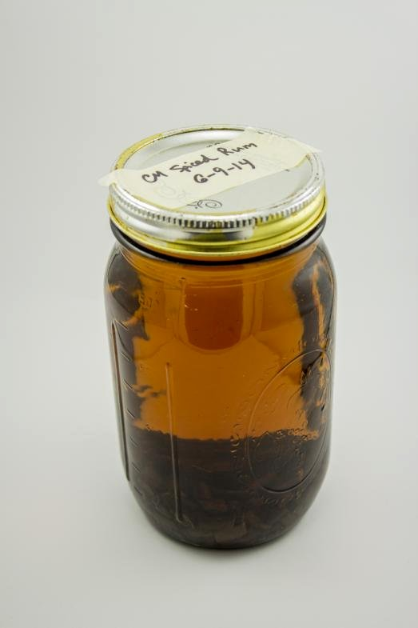
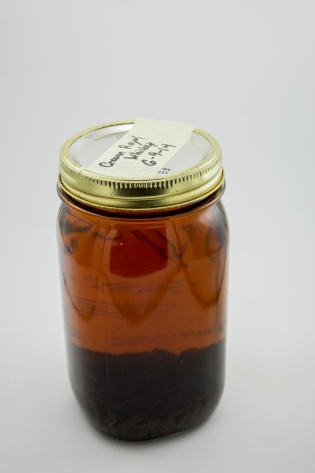
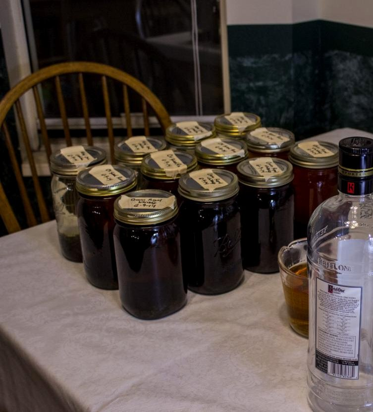

Making Vanilla Extract
A short note on a kitchen hobby: Madagascar beans, alcohol, mason jars, and time in the basement.
The beans
I started with about two pounds of Madagascar vanilla beans — the kind usually described as creamy, smooth, and sweet. They arrived sticky enough to cling to everything they touched. We split them into mason jars for aging, roughly twenty beans to a jar.


Cut by hand
Once the jars were set, I cut the beans down by hand so the batch kept a handmade feel. A blender would have been faster. The beans are tough; the knife work is slow on purpose.

Into the jars
We are making three different kinds of vanilla. Each small bottle of alcohol (about 1.75 oz) filled two quart mason jars, with only a little room to spare once the beans took up space.



Aging
The jars live in the basement now, mellowing. At least once a week we go down and agitate them. Extract is mostly waiting — beans, spirit, and patience.

Why it matters
This is a hobby, not a factory story. I am having a blast, and I look forward to sharing bottles when a batch is ready.